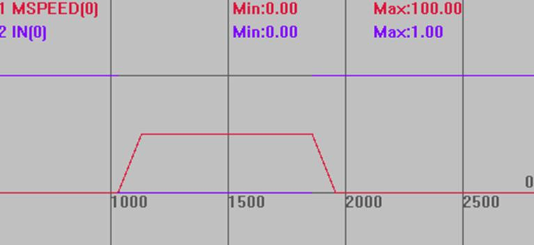

|
类型 |
轴参数 |
|
描述 |
正向JOG输入对应的输入口编号，-1无效。
输入OFF时，认为有信号输入，要相反效果可以用INVERT_IN反转电平(ECI系列控制器除外)。 当有信号输入时，对应轴按照JOGSPEED速度正向运动。 |
|
语法 |
VAR1 = FWD_JOG，FWD_JOG= expression VAR1 = FWD_JOG(axisnum)，FWD_JOG(axisnum)= expression |
|
适用控制器 |
通用 |
|
例子 |
BASE(0) '选择轴0 DPOS=0 '坐标清0 UNITS=100 ATYPE=1 SPEED=100 '速度100 ACCEL=500 '加速度为500units/s/s DECEL=500 JOGSPEED=50 'JOG速度50 FWD_JOG=0 '输入IN0作为正向JOG开关 INVERT_IN(0,ON) '反转信号 TRIGGER '自动触发示波器
输入0口有信号输入时，轴0正向运行，速度为50。 输入0口取消信号输入时，轴0停止。
速度曲线 MSPEED(0)垂直刻度100  |
|
相关指令 |